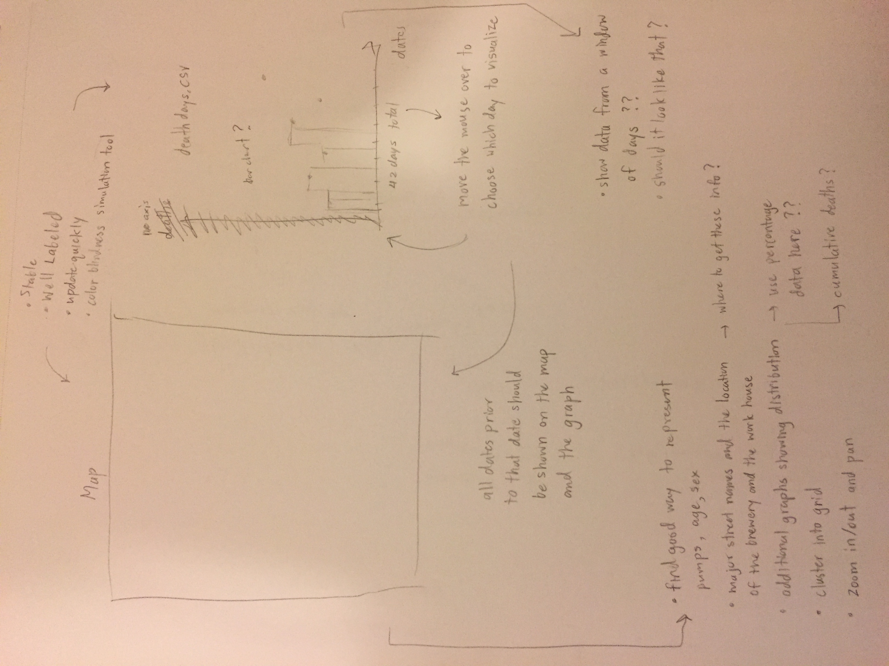
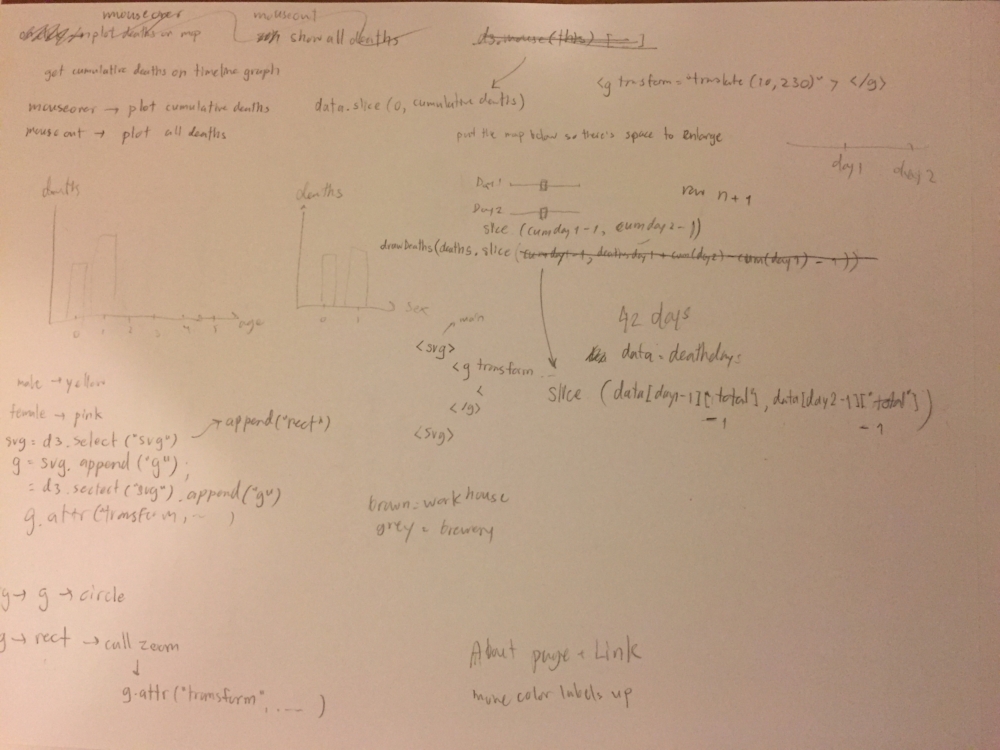

The first thing I did for this project was to simply sketch my rough ideas on paper. Since the map and the timeline graph are the main components of this visualization project, I started by drawing those two side by side. From there, I wrote down their interactivities as well as the requirements for each of them. As shown in the first sketch below, I used arrows to help me organize my thoughts on order of executions. After I started writing code, new ideas still show up, so I had to keep sketching on paper, both for the big picture and for the specifics on the code, as shown in the second sketch.
 
1.) When creating a plot, other than deciding on the design, I also had to think about what sort of data I would need. Sometime I had to generate a new data by myself. For example, I created a new data in order to draw the age distribution plot. The data consists of five rows, each containing the age and its respective deaths. However, in the every end, I figured this was not a good idea because the data is not flexible. It would be impossible to have the age distribution plot change dynamically.
2.) I chose red to represent male and blue to represent female. These two colors are opposite so there will not be a problem for color blind people.
3.) Pumps, workhouse, and brewery were represented with both colors and sizes so that it is clear to see where each item is.
4.) I used bar charts on all the plots because they are all frequency plots. The y-axis is not included because the values can already be seen by hovering the mouse at a particular bar.
5.) The map is placed at the bottom because of two reasons. First, the age and gender distribution plots are the more basic exploratory analysis. Users should see the basic information before diving into something deeper. Second, I want to leave room under the map for zooming, if the age and gender distribution are to be at the bottom, they would be too far down.
6.) When hovering the mouse over a timeline bar, there is the number of day since the event started. This information makes it easy for users to utilize the slidebars above the timeline plot, since the input for each of those slidebars is the day since the event occurred.
1.) People who were 10 or younger and over 80 had higher deaths than the rest. This makes sense since they are either too young or too old to have a strong immune system.
2.) Deaths were lower near the workhouse because the building has its own well so no one drinks water from the pump.
3.) Deaths were also lower near the brewery because workers there were given free beer so they did not drink water.